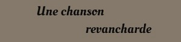

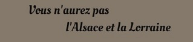

Premières blessures
La France a un plan !... C’est écrit dans les livres d’histoire d’Augustine et Léa, depuis des années les nations européennes s’arment, cela risque de mal finir et il faudra bien qu’un jour notre Alsace et notre Lorraine reviennent dans le giron de la patrie. Alors oui, la France a un plan !...
C’est le plan XVII, concocté par le Maréchal Joffre. C’est avant tout un plan de mobilisation massive avec l’envoi des troupes sur l’Est de la France, des Vosges au Luxembourg. Ce plan sera un échec retentissant avec les allemands débordant les armées françaises par la Belgique et de façon plus inquiétante, une tactique de guerre inappropriée face à la puissance de feu de l’artillerie ennemie et à ses mitrailleuses. Joffre n’aura d’autre choix que d’ordonner la retraite dès le 24 Août avec un repli au sud de la Marne le 5 Septembre. L’armée française reprendra la main avec la bataille de la Marne, mais il s’en est fallu de peu que les allemands arrivent aux portes de Paris.
Les trois frères se retrouvent rapidement aux premières loges du conflit. Basés au 17eme régiment d’infanterie à Epinal, Auguste et Antoine participent tout de suite à l’offensive sur l’Alsace comme prévu par le plan XVII. Le 98eme régiment d’infanterie de Gabriel est également rattaché à la 1ere Armée qui a pour mission initiale de reprendre l’Alsace.
Tout est écrit dans les journaux de marche des régiments et sur les cartes d’Etat major de l’époque et il est facile de retracer le parcours des trois frères sur ces mois d’Août et Septembre.
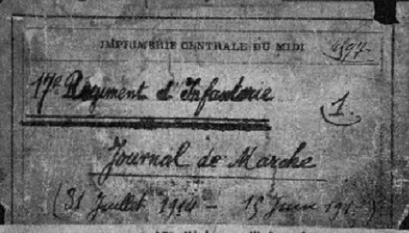
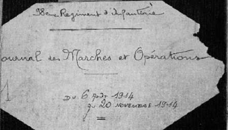
Cette phase du conflit sera appelée la Guerre des frontières, et c’est encore une guerre de mouvement. Dans le secteur des Vosges, elle se déroule pour la plupart dans un paysage montagneux et de forêts. Imaginez un instant, nous sommes au mois d’Août, il fait chaud et ça sent bon le sapin, sous-bois on marche sur des tapis moelleux d'aiguilles de pins et pour peu on chercherait à cueillir des myrtilles … seulement voilà, c’est à la guerre qu’on va … quel choc ce doit être !
Les évènements vont s’entraîner très vite et en l‘espace d’un peu plus d’un mois, les trois frères seront blessés …Preuve en est, la première carte envoyée par Antoine datée du 21 Août et qui n’arrive aux Raynauds que le 7 Septembre, date à laquelle Auguste est déjà blessé.
Chers Parents,
Je vous écris ces quelques mots pour vous dire que nous sommes en bonne santé. Je désire que vous soyez de même.
Je vous embrasse bien fort.
Antoine
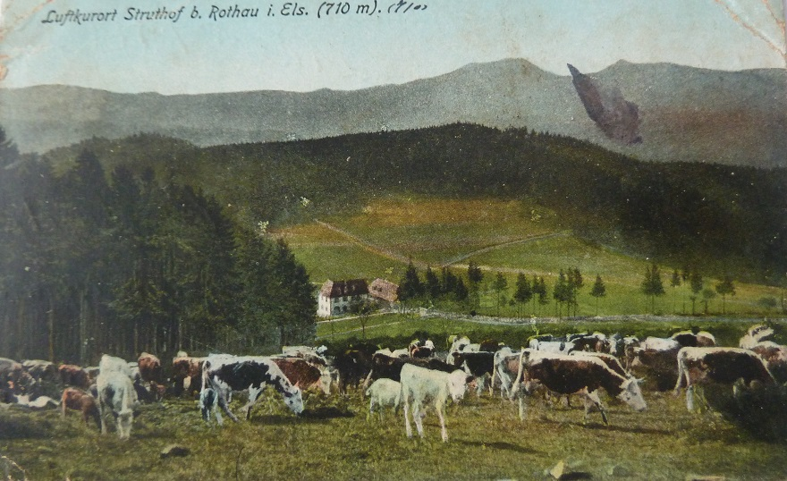
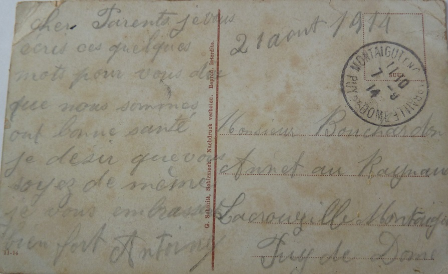
Le choix de la carte est très intéressant, à plusieurs titres. C’est une vue d’Alsace donc en territoire allemand à l’époque, un jour plus tard le régiment devra battre en retraite. On y voit un paysage bucolique avec des vaches … l’Auvergnat est toujours curieux de découvrir les bêtes des autres régions françaises et sans doute les commentaires vont bon train quand la carte est lue à la ferme. Cette vision paisible et estivale tranche fortement avec la réalité des batailles dans lesquelles le régiment est engagé, et déjà le soldat ne dit pas tout mais cherche avant tout à rassurer.
Enfin il y a une certaine ironie dans cette carte. Ce petit coin d’Alsace certes rejoindra la France après la guerre, mais durant la seconde guerre mondiale les allemands y installeront le seul camp de concentration du territoire français.
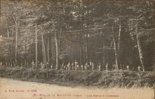
Le premier blessé est donc Auguste, le 26 Août, à la bataille du col de la Chipotte. Ce col est alors une position stratégique puisqu’il commande l’accès à la route d’Epinal où se trouve une importante garnison française.
Après une offensive initiale sur l’Alsace et la Lorraine, les 1ere et 2eme armées françaises subissent de lourdes pertes à Morhange, le 20 Août. Les armées allemandes contre-attaquent, épaulées par leur artillerie lourde. Les armées françaises doivent alors battre en retraite et se replier sur la rive gauche de la Meurthe.
Le 17eme régiment d’infanterie est chargé de défendre le pont de Thiaville. Finalement, il doit céder la position et comme le reste des troupes, le régiment se replie sur le col de la Chipotte le 25 Août. On s’affronte dans la forêt avec peu de visibilité, ce qui veut dire des combats d’infanterie et bien souvent au corps à corps et à la baionnette.
La participation du 17eme dans la bataille est minutieusement relatée dans le journal de marche des 25 et 26 Août. Ce jour-là, on compte sept morts, trente neuf blessés et dix-neuf disparus au régiment. C'est beaucoup pour un régiment de 1000 hommes !
La bataille durera jusqu’au 10 Septembre et fera plus de 4000 morts côté français, le double pour l’ennemi. Le Col de la Chipotte sera désormais appelé le "Trou de l’Enfer" par les soldats des deux pays.
Son importance est primordiale pour la suite du conflit et nombre d’historiens considèrent qu’en bloquant l’avancée des allemands dans les Vosges, elle contribua fortement au succès de la bataille de la Marne.
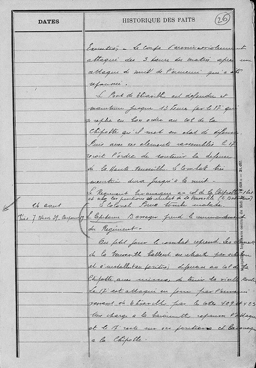
… Le corps d’armée est violement attaqué dès 3 heures du matin après une attaque de nuit de l’ennemi qui a été repoussée.
Le pont de Thiaville est défendu et maintenu jusqu’à 13 heures par le 17eme qui se replie en bon ordre au col de la Chipotte qu’il met en état de défense. Puis, avec ses éléments rassemblés, le 17eme reçoit l’ordre de soutenir la défense de la Haute Veuveville. Le combat très meurtrier dura jusqu’à la nuit. Le régiment bivouaque au col de la Chipotte.
26 Août – Tués 7 Blessés 39 Disparus 19
Le colonel Brue tombe malade. Le capitaine Bassager prend le commandement du régiment.
Au petit jour, le combat reprend. Les éléments de la Veuveville battent en retraite par échelons et s’installent en position défensive au col de la Chipotte avec mission de tenir la vieille route. Le 17eme est attaqué en force par l’ennemi venant de Thiaville par les cotes 409 et 423. Une charge à la baionnette repousse l’attaque et le 17eme reste sur ses positions et bivouaque à la Chipotte …
Auguste informe rapidement la famille, comme en atteste cette carte postale adressée à son oncle et qui arrive à Chez Chamard le 30 Août 1914.
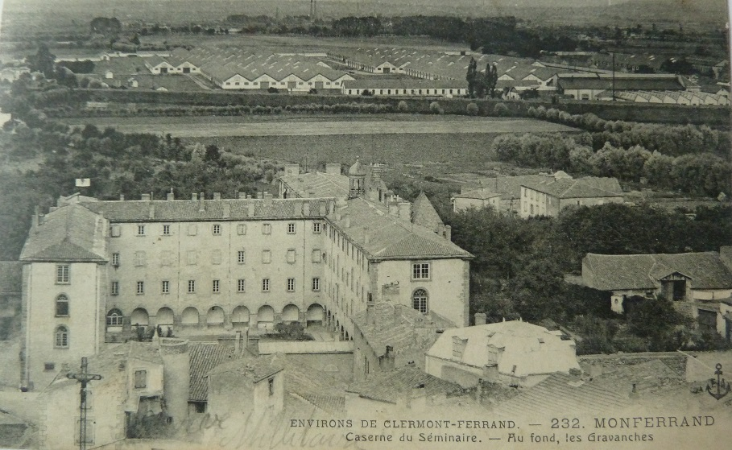
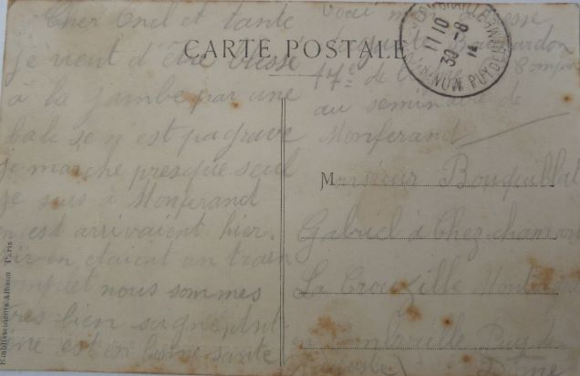
Chers Oncle et Tante,
Je viens d’être blessé à la jambe par une balle. Ce n’est pas grave, je marche presque seul. Je suis à Montferrand, on est arrivés hier soir. On était un train complet.
Nous sommes très bien soignés et en bonne santé. Voici mon adresse : Auguste Bouchardon, 17e de ligne, 6eme Compagnie au séminaire de Montferrand.
Auguste
Très vite, Auguste est évacué sur Lyon
Chers Parents,
Je suis à l’hôpital depuis ce matin. Maintenant, ça va toujours de mieux en mieux. On va me sortir la balle un de ces jours.
Je pense pas rester longtemps à l’hôpital. On y est bien soigné et bien nourri, il fait bien beau temps. Je me fais pas trop de mauvais sang. Je termine en vous embrassant tous bien fort.
Auguste, 17e de ligne à l’hôpital des Genets. 1er blessé à Lyon
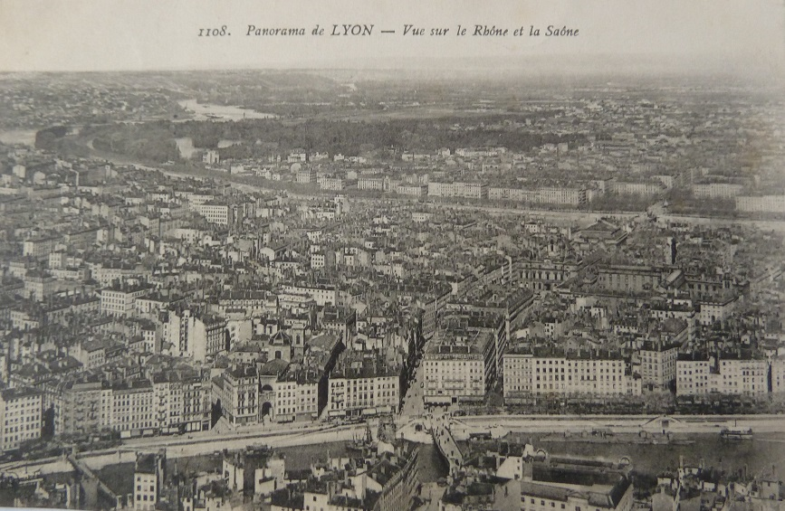
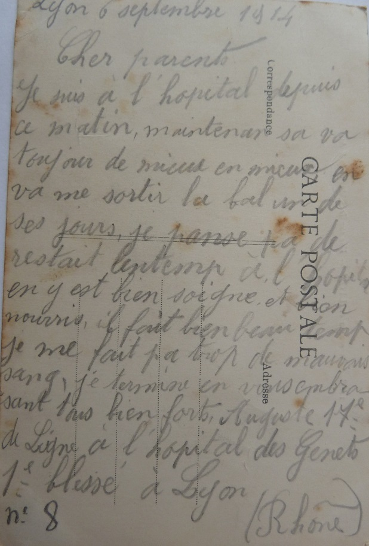
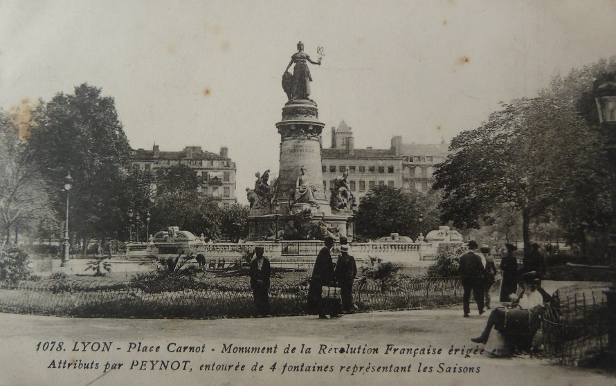
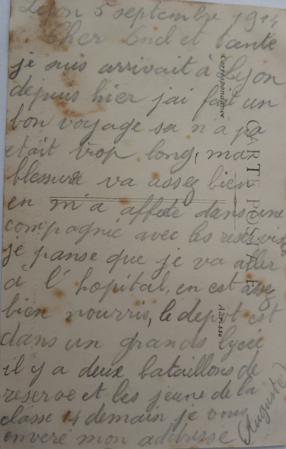
Chers Oncle et Tante,
Je suis arrivé à Lyon depuis hier. J’ai fait un bon voyage, ça n’a pas été trop long. Ma blessure va assez bien.
On m’a affecté dans une compagnie avec les réservistes. Je pense que je vais aller à l’hôpital. On est assez bien nourris, le dépôt est dans un grand lycée. Il y a deux bataillons de réserve et les jeunes de la Classe 14 demain.
Je vous enverrai mon adresse.
Auguste
Auguste n'oublie pas son frère jumeau resté à la guerre.
Cher Frère,
Me voilà arrivé depuis hier au dépôt à Lyon. Je suis dans une compagnie avec les réservistes. Ma blessure va assez bien.
Je désire que ma carte te trouve de même. Je pense que je vais rester à l’hôpital, je ne te donne pas mon adresse. J’ai trouvé Bourgier, il vient me voir tous les jours.
Ton frère, Auguste
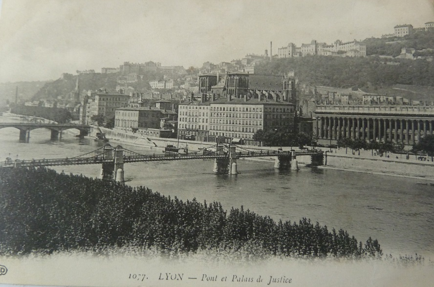
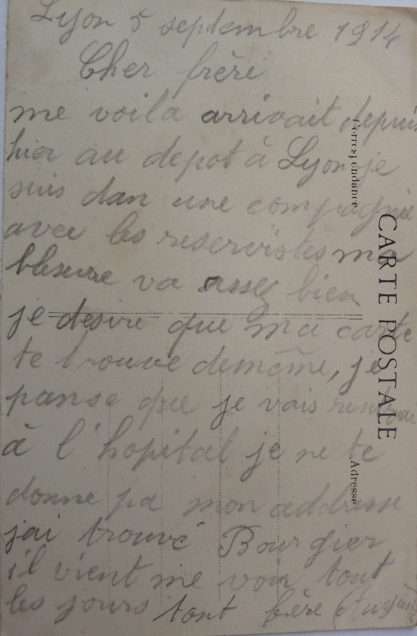
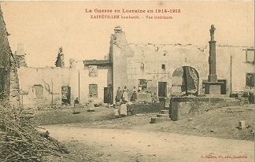
Le second blessé est Gabriel, le 9 Septembre sur la commune de Xaffévillers. Bien que Gabriel n’ait alors aucun contact avec ses deux frères, il ne se trouve pas à plus de 10 kilomètres à vol d’oiseau du col de la Chipotte.
Depuis la fin du mois d’Août, le 98eme régiment d’infanterie est alors engagé dans une sorte de jeu du chat et les souris avec les allemands – embuscades, offensives, contre-offensives et retraites tactiques.
Le 8 septembre, l'attaque générale des positions ennemies est ordonnée pour le lendemain. Le 9, à 2 h 30 du matin, le régiment se met en mouvement. Sa mission est d'enlever Xaffévillers et de pénétrer profondément dans le bois du Grand-Bras.
Malheureusement, l’ennemi, d’abord surpris, se reprend vite et cette offensive sur Xaffévillers sera meurtrière comme en atteste le Journal de Marche du 98eme.
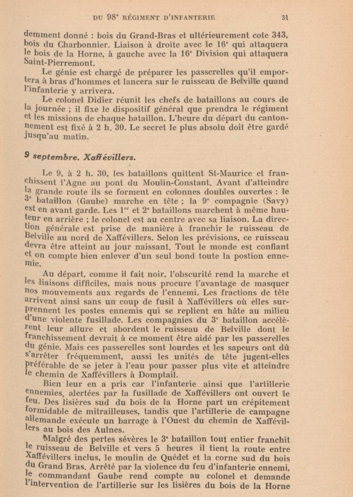
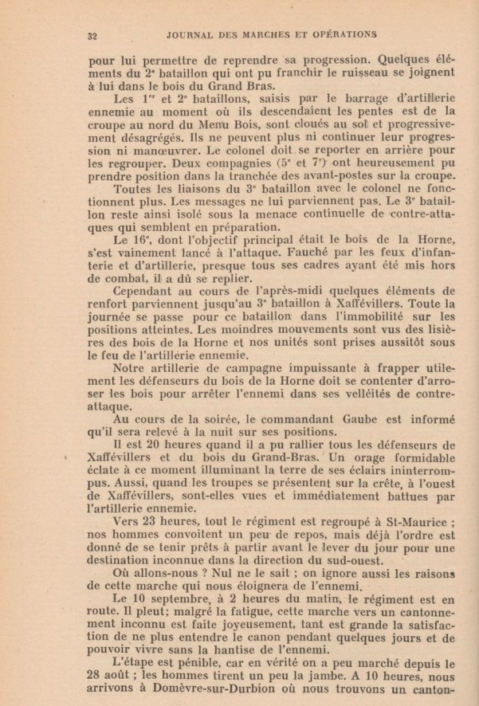
Il n'y a pas de carte de Gabriel informant de sa blessure, en revanche on trouve mention de celle-ci dans une carte écrite par son oncle à Antoine.
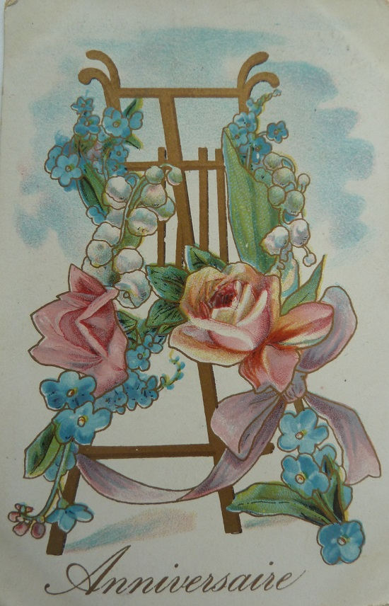
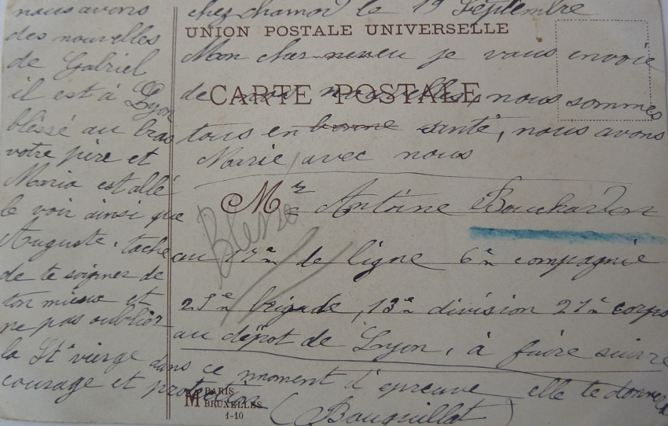
Mon cher neveu,
Je vous envoie de nos nouvelles, nous sommes tous en bonne santé. Nous avons Marie avec nous.
Nous avons des nouvelles de Gabriel, il est à Lyon blessé au bras. Votre père et Maria est allé le voir, ainsi que Auguste. Tâche de te soigner de ton mieux et de ne pas oublier la Sainte Vierge.
Dans ce moment d’épreuve, elle te donnera courage et protection.
Bouquillat
Une fois encore les évènements se précipitent. La lettre envoyée par son oncle à Antoine est datée du 19 Septembre. La famille ne le sait pas encore, mais à cette date Antoine a déjà été blessé depuis cinq jours !
Antoine n’est d’ailleurs plus dans les Vosges. Quelques jours après la bataille du col de la Chipotte, l’Etat Major a ordonné le déplacement du 17eme régiment d’infanterie en renfort des troupes massées sur les bords de la Marne. En effet, après la grande retraite engagée dès fin Août suite à l’échec du plan XVII, Joffre a décidé d’arrêter l’offensive allemande coûte que coûte sur la Marne.
Après les combats dans les montagnes et forêts, c’est un paysage de plaine que découvre Antoine. En Champagne crayeuse, on voit à perte de vue et la marche des colonnes de fantassins soulève des nuages de poussière blanche. Pas de bétail ici, mais une terre plutôt pauvre en ce début de XXeme siècle.
La bataille de la Marne aura lieu du 5 au 12 Septembre. Face à face, 760,000 soldats français et 680,000 soldats allemands. La victoire marquera l’échec définitif du plan Schlieffen, mais épuisées et affaiblies les troupes françaises ne pourront pas poursuivre efficacement les troupes allemandes qui résisteront sur le front de l’Aisne. Cette partie du front se stabilisera avec les armées s’enterrant dans les tranchées.
Le bilan est lourd. Du côté français : 21.000 tués, 111.363 blessés, 83.409 disparus. Du côté allemand : 43.000 tués, 173.000 blessés, 40.000 disparus.
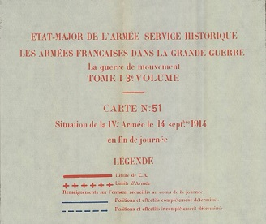
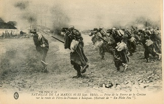
Rattaché au 21eme Corps d’armée, le 17eme régiment d’infanterie participe à la bataille de Vitry, l’une des batailles décisives de la contre-offensive française sur la Marne. Cette fois-ci, bien épaulés par leur artillerie, les fantassins prennent le dessus sur les allemands.
Antoine est blessé le 14 Septembre dans les environs de Suippe alors que le 17eme poursuit l’armée allemande en retraite. Comme en atteste le journal de marche du régiment, ce jour là les combats sont particulièrement violents, avec des pertes considérables pour le 17eme : 29 tués, 248 blessés et 82 disparus. Cela représente environ un tiers du régiment !
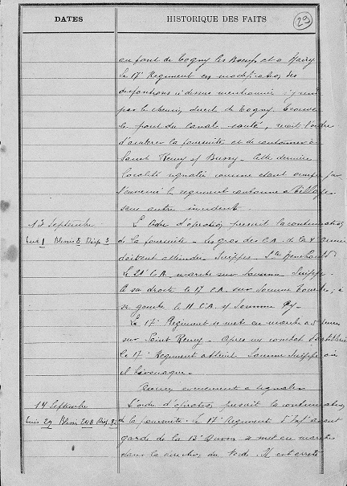
13 Septembre – Tués 1, Blessés 8, Disparus 3
L’ordre d’opération prescrit la continuation de la poursuite. Le gros des Corps d’Armée de la 4ème Armée doivent atteindre Suippes – Ste Menehould. Le 21ème CA marche sur Somme-Suippe. A sa droite, le 17ème CA sur Somme-Tourbe. A sa gauche, le 11ème CA sur Sommepy.
Le 17ème régiment se met en marche à 5 heures sur Saint-Remy. Après un combat d’artillerie, le 17ème régiment atteint Somme-Suippe où il bivouaque.
Aucun évènement à signaler.
14 Septembre – Tués 29, Blessés 248, Disparus 82
L’ordre d’opération prescrit la continuation de la poursuite. Le 17ème régiment placé en avant-garde de la 13ème Division se met en marche dans la direction du nord. Il est arrêté sur la ligne Souain-Perthes-lès-Hurlus par l’ennemi formidablement retranché. Tentant d’enlever la crête Sud-Est de Souain, il est accueilli par des rafales d’artillerie, de mitrailleuse et l’infanterie qui l’empêche de progresser.
Le régiment bivouaque. Les pertes sont élevées, environ 80 tués (dont un officier) et blessés et disparus.
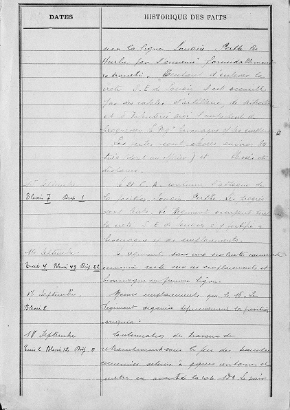
Nous sommes seulement à la mi-Septembre, mais dans les quarante jours qui viennent de s’écouler les trois frères sont devenus combattants, ils ont été blessés, ont échappé à la mort et ont déjà vieilli. Ils ont vu nombre de leurs camarades mourir sur le champ de bataille. Ils savent les horreurs de la guerre et ils savent leur chance d’y échapper pour un temps.
Les morts et les blessés sont vite remplacés par les nouvelles classes, les comptes en hommes des régiments remis en ordre et la machine de guerre, terrible convoyeuse d’hommes, s’est mis en branle … Mais eux, ils savent ce qui attend les nouvelles recrues …
Ce sentiment est très bien décrit dans ces quelques pages de Ceux de 14 de Maurice Genevoix, sans doute le plus beau livre écrit sur la guerre de 14-18. Comme les trois frères, Maurice Genevoix, alors sous-officier, a combattu dès le début dans les Vosges, a vécu la même retraite initiale et a très tôt mesuré l’énorme gâchis humain de cette aventure.
… Il n’y avait personne sur la route. J’ai marché longtemps sans penser à rien, n’éprouvant que la joie de marcher parmi les arbres. Et voici qu’à un tournant, très loin, une troupe d’hommes apparut, s’allongea, ondula à ma rencontre. Son allure était lasse, presque accablée : ce devait être une troupe de vieux territoriaux, une compagnie de travailleurs qui rentrait au cantonnement, une fois achevée la besogne du jour.
J’approchais, étonné de ne point reconnaître les silhouettes épaisses et frustes, le profil des outils jetés sur les épaules. Les corps de ces hommes m’apparaissaient fluets, à peine virils. Et quand, plus près encore, je pus distinguer les visages, je m’aperçus que c’étaient des visages d’enfants, de chairs rondes, mais lasses et meurtries, comme salies d’une excessive fatigue. Un officier marchait à leur tête. Il me reconnut, s’exclama :
« Toi ici !... Tu as déserté, ou quoi ? »
C’était le grand Sève, de la 1ere. Arrêté, les bras ouverts, il maintenait le troupeau fourbu dont les rangs refluaient mollement dans le bruit des chaussures traînées. Je lui demandai :
« Classe 14 ?
_ Tu vois », me dit-il.
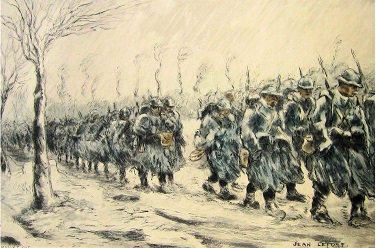
Et plus bas, avec une moue.
« C’est plein de bonne volonté, ça veut bien faire … Mais ça ne tient pas, ça se vanne toute de suite … Trop jeunes : réellement trop. »
Et c’était vrai. Une surprise pénible me tenait au bord de la chaussée, immobile, tandis qu’ils défilaient, derrière Sève. Leurs capotes trop larges glissaient à leurs épaules. Le sac haut monté leur écrasait la nuque : ils tendaient le coup et regardaient la route fixement, les uns pâles et les yeux creux, d’autres trop rouges, et de grosses gouttes de sueur aux tempes malgré le froid que le soir avivait.
Quelques sous-officiers marchaient au flanc de la colonne. Et de ceux-là je reconnaissais les visages hâlés, les pommettes sèches, d’allure tranquille et longue. Ceux-là se ressemblaient entre eux. Je les avais quittés le matin, j’allais les retrouver tout à l’heure. Depuis des mois ils étaient les seuls hommes avec qui j’eusse vécu, hommes de toutes classes, de toutes provinces, chacun lui-même parmi les autres, mais tous guerriers sous leurs vieilles défroques aux plaques d’usure identiques, sous le harnais de cuirs ternes, sous la visière avachie des képis – des guerriers fraternels par l’habitude de souffrir et de résister dans leur chair, par quelque chose de courageux et de résigné qui les « incorporait » mieux encore que la misère de leur uniforme.
Tandis que les autres ! Tous ces jeunes qui passaient, rang par rang, à n’en plus finir ! Calicots, comptables, maraîchers des banlieues, vignerons champenois, ils étaient bruns ou blonds comme on l’était naguère, laids quelques-uns, d’autres sales, d’autres restés jolis et se souvenant de l’être. Quatre par quatre ils se suivaient, apparus brusquement, disparus. J’aurais voulu tourner la tête, les mêler tous en un regard, les voir soldats comme cela devait être, et secouer ainsi le douloureux malaise qui me tenait cloué sur le bord de cette route, m’obligeait à les voir les uns après les autres, à les compter malgré moi, quatre, et puis quatre, et puis quatre … jusqu’à quand ?
Voici qu’ils étaient là, de partout arrachés, mis en tas. On retrouvait sur eux, encore, des lambeaux de ce qu’avait été leur vie. « Mais nous ? me disais-je. Mais nous ? » … Ah ! nous, ce n’était pas la même chose. Le 2 Août, le délire énorme, la rafale de folie tournoyant sur l’Europe entière, les trains hurlants, les mouchoirs frénétiques … En vérité, ce n’était pas la même chose.
Ceux-ci maintenant, après nous, bientôt comme nous, perdus … Et c’étaient des nôtres qui étaient allés vers eux, pour les « instruire », pour les mieux prendre …
Quatre ; et puis quatre … Ils défilaient toujours. Il devait y en avoir tout un bataillon. Derrière moi, au fond de la forêt, des coups de canon se boursouflaient lourdement : ils les entendaient de la tête aux pieds ; je les entendais à cause d’eux.
C’était loin, encore loin. Mais ne savaient-ils pas qu’ils en étaient à la dernière halte, qu’on ne les lâcherait plus puisqu’on les avait pris , qu’il allait falloir avancer vers cela qu’on entendait, achever la dernière étape, être arrivés ?
Et je me demandais avec un affreux serrement de cœur, en regardant cette foule harassée, ces reins ployés, ces fronts inclinés vers la terre, lesquels de ces enfants habillés en soldats portaient déjà, ce soir, leur cadavre sur leur dos.
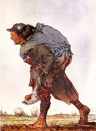
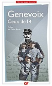